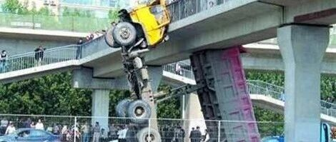

杭州的桥又被撞了 | 回顾超高车辆撞击桥梁上部结构研究
昨晚22:40，杭州一天桥被超高货车撞击导致落梁（图1），引发广泛关注。大约10年前，在国家自然科学基金和北京市科委支持下，我曾经和清华大学课题组学生张炎圣、何水涛、徐梁晋、程晓波等开展过一些超高车撞击桥梁上部结构的研究，所以也借这个机会和大家回顾一下。

图1 518杭州事故照片（图片来源杭州交通微博）
超高车辆撞击桥梁上部结构的事故实际上是大量存在的（图2）。根据北京有关统计数字，2000~2006年，北京每年发生车桥撞击事故100+起，50％以上的桥梁遭受过车辆撞击，20％的桥梁损坏是车辆撞击造成（北京晚报，2007）。

图2 国内典型超高车辆撞击桥梁事故
虽然司机驾驶行为不规范是导致超高车撞击事故的主要原因，但是即便是交通规则远比中国进步的发达国家，超高车辆撞击事故也不能完全避免，例如美国61％跨线桥梁曾遭受撞击 (Hite, 2007)，14％ 损坏由撞击导致(Harik et al., 1990)（图3）。

图3 国外典型超高车辆撞击桥梁事故
所以，面对超高车辆撞击引发的问题，我们除了要提高交通管理的水平，在桥梁设计时合理考虑撞击作用也是需要的。而我国2004版《桥规》虽然对撞击荷载做了规定，但是主要是参考国外规范，缺乏基于我国实际情况的研究基础，且条文规定也相对比较简单（图4）。国内外对这个问题的研究积累也很少。

图4 我国2004版《桥规》对撞击荷载的规定
所以，针对上述问题，我们系统的开展了相关研究（图5），希望回答以下三个系列问题：
(1) 对桥梁进行分类，哪些桥梁存在撞坏的危险？哪些桥梁不存在撞坏的危险？
(2) 对可能被撞坏的桥梁，桥梁如果受到撞击，将遭受多大的撞击荷载？既有桥梁，如何防护或加固可以抵抗撞击荷载？新建桥梁，如何设计才能抵抗撞击破坏？
(3) 对已经被撞击的桥梁，撞击过程中桥梁内部受到了多大的损伤？桥梁剩余承载力有多少？

图5 本研究的逻辑框架
我们首先在实验室进行了超高车辆撞击桥梁上部结构的模型试验，制作了油罐车罐体模型，通过摆锤运动撞击混凝土T梁、钢箱梁、钢板梁、FRP梁桥模型，获得了撞击作用下不同桥梁的破坏机理（图6）。


图6 开展的超高车辆撞击模型试验
而后我们通过有限元分析，验证了研发的有限元模型可以很好的模拟超高车辆撞击模型试验的结果（图7）。


图7 建立有限元模型，模拟撞击试验结果
基于已经验证的碰撞有限元模型，我们开展了不同车型、不同桥型的超高车辆撞击模拟研究（图8），包括与杭州事故类似的落梁破坏模式模拟。


图8 不同车型、不同桥型的超高车辆撞击模拟研究
而后，我们就可以明确撞击导致的破坏模式（图9），包括整体破坏模式和局部破坏模式。


图9 撞击引起的破坏模式
并发现，整体破坏模式主要和撞击过程的冲量大小有关，局部破坏模式主要和撞击过程中的最大撞击力有关。于是，就要设法提出撞击过程中总冲量和最大撞击力的计算方法。为此，我们首先建立了超高车撞击桥梁上部结构的理论模型。根据超高车撞击桥梁过程中的运动学特征（图10），通过大量参数讨论论证可以进行如下简化（1）忽略车厢-桥梁摩擦力；（2）忽略车轮-路面摩擦力；（3）忽略车辆重力；（4）桥梁简化成刚性墙。得到相应的简化模型和运动微分方程（图11）。

图10 撞击过程中的运动学特征

图11 撞击过程的简化模型和运动微分方程
求解该运动方程，就可以很好的模拟超高车辆撞击过程（图12），且无需使用复杂的非线性有限元分析，为提出工程设计方法奠定了基础。

图12 简化模型和精细有限元模型结果对比
基于简化模型的运动微分方程，通过将撞击力简化成半正弦曲线（图13）

图13 撞击力简化模型
基于动量守恒原理和动能守恒原理（图14）

图14 由动量守恒原理和动能守恒原理获得撞击力的工程设计表达式
就可以给出撞击荷载的工程设计公式（图15），其中主要参数取值我们也编制了计算表格（图16），查表就可以进行工程计算，不必进行复杂的非线性有限元建模、微分方程求解，非常适合工程人员的需求。且精度也满足工程需要（图17）。

图15 撞击荷载的工程设计公式

图16 公式参数表格

图17 设计公式的精度验证
针对既有桥梁防护车辆撞击的需要，我们还发明了一种高效轻质的耗能防护装置并获得了发明专利（图18），并通过撞击模型试验验证了该装置的有效性（图19）。


图18 高效轻质的耗能防护装置

图19 防护装置效果试验检验
最后我们将上述工作进行了整理，撰写了《超高车辆撞击桥梁上部结构研究——破坏机理、设计方法和防护对策》，由中国建筑工业出版社于2011年出版（图20）。

图20 总结上述工作的书
时间一晃近十年过去了。真的非常喜欢安安静静的做一些系统性的科研工作，做做试验、做做计算、写写书，真的很开心很开心。
感谢上述研究过程中，清华大学叶列平、王宗纲、任爱珠老师，以及北京计算中心等合作单位提供的帮助。
---End--
相关研究
长按识别二维码，关注我们的科研动态